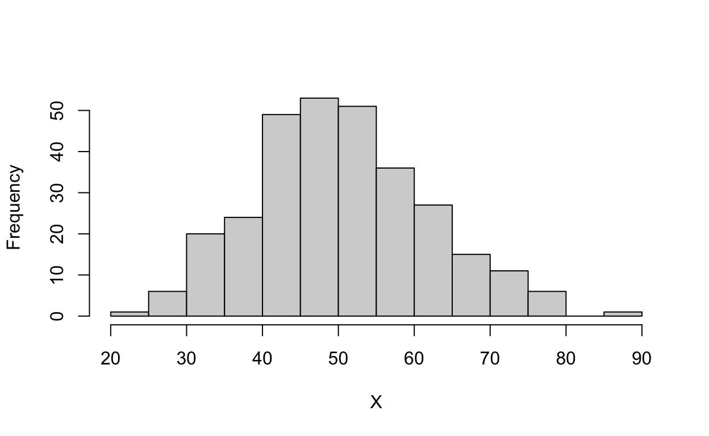
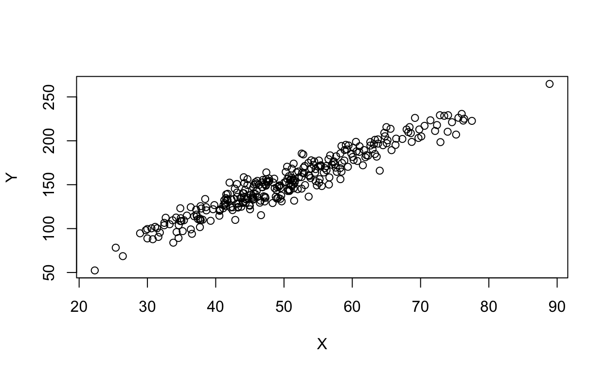

WELCOME AND INSTRUCTIONS

This is a tutorial for readers of DSS: Llaudet and Imai’s Data Analysis for Social Science: A Friendly and Practical Introduction (Princeton University Press, 2022). DSS teaches from scratch R, statistics, and the fundamentals of quantitative social science (causal inference, survey research, and predictive models).
Review exercises are organized by chapter. Here are those for chapter 3.
The review exercises are designed to be completed after reading and doing the exercises in the book. They are meant to supplement, not replace, the book. In the tutorials, each chapter is divided into two to five topics, where each topic contains exercises reviewing a handful of pages that can be read in one sitting. Here is the recommended sequence:
| \(\blacktriangleright\)\(\blacktriangleright\)\(\blacktriangleright\) STEP 1 \(\blacktriangleright\)\(\blacktriangleright\)\(\blacktriangleright\) | \(\blacktriangleright\)\(\blacktriangleright\)\(\blacktriangleright\) STEP 2 \(\blacktriangleright\)\(\blacktriangleright\)\(\blacktriangleright\) | \(\blacktriangleright\)\(\blacktriangleright\)\(\blacktriangleright\) STEP 3 \(\blacktriangleright\)\(\blacktriangleright\)\(\blacktriangleright\) | \(\blacktriangleright\)\(\blacktriangleright\)\(\blacktriangleright\) STEP 4 \(\blacktriangleright\)\(\blacktriangleright\)\(\blacktriangleright\) |
|---|---|---|---|
|
read the section(s) of the textbook that correspond to a particular topic |
follow along with the exercises in the textbook on your own computer |
complete the corresponding review exercises provided here |
move on to the next topic, and go back to step 1 |
Found an error? Please email me at ellaudet@gmail.com. I hope these exercises are helpful! - Elena
OVERVIEW OF CHAPTER 3
In chapter 3, we learn how to infer population characteristics from a representative sample, how to handle missing data, and how to visualize and summarize both the distribution of a single variable and the relationship between two variables.
The review exercises for this chapter are organized into two topics.
| Topic | Readings | Key Concepts and Notation | R Functions and Operators |
|---|---|---|---|
| Survey Research and Data Exploration | 3–3.4 | sample, representative sample, random sampling, population, sample size (n), N, table of frequencies, table of proportions, missing values (NA), listwise deletion, two-way table of frequencies, two-way table of proportions, histogram, density histogram, descriptive statistics, mean, median, standard deviation, variance | table(), prop.table(), na.omit(), hist(), mean(), median(), sd(), var() |
| Exploring the Relationship Between Two Variables | 3.5–3.5.2 | scatter plot, correlation coefficient, direction and strength of linear association | plot(), abline(), cor() |
Let’s start!
1. Survey Research and Data Exploration
The review exercises in this topic cover:
| Readings | Key Concepts and Notation | R Functions and Operators |
|---|---|---|
| 3–3.4 | sample, representative sample, random sampling, population, sample size (n), N, table of frequencies, table of proportions, missing values (NA), listwise deletion, two-way table of frequencies, two-way table of proportions, histogram, density histogram, descriptive statistics, mean, median, standard deviation, variance | table(), prop.table(), na.omit(), hist(), mean(), median(), sd(), var() |
\(\textrm{ }\)\(\textrm{ }\)\(\textrm{ }\) Multiple Choice Questions
- Select correct answer(s) and click blue Submit Answer
- In multi-answer questions, you must select ALL correct statements
- If incorrect, click orange Try Again until correct
- To delete all your answers and restart the tutorial: click Start Over in left menu
- Otherwise, progress is automatically saved

\(\textrm{ }\)\(\textrm{ }\)\(\textrm{ }\) Typing and Running Code
- Type code in the R code window
- Click green Run Code to test
- Click blue Submit Answer when satisfied
- Use white Hint button if needed
- To delete all your answers and restart the tutorial: click Start Over in left menu
- Otherwise, progress is automatically saved
For the next few questions, we are going to work with the BES
dataset from Chapter 3 of DSS. Below is a description of the variables
in this dataset, where the unit of observation is survey
respondents.
| variable | description |
|---|---|
| vote | respondent’s vote intention in the EU referendum: “leave”, “stay”, “don’t know”, or “won’t vote” |
| leave | identifies leave voters: 1 = intends to vote “leave” or 0 = intends to vote “stay”; NA = either “don’t know” or “won’t vote” |
| education | respondent’s highest educational qualification: 1 = no qualifications, 2 = GCSE, 3 = GCE A level, 4 = undergraduate degree, 5 = postgraduate degree; NA = no answer |
| age | respondent’s age in years |
In the following exercises, we analyze the BES survey data to
answer: Who supported Brexit?
SETUP:
Suppose we have already set the working directory to the DSS
folder and run the code below to read and store the BES
dataset.
bes <- read.csv("BES.csv") # reads and stores dataGo ahead and run the following code to look at the first six observations:
head(bes)
Q1 - Table of
Frequencies: Use the table()
function to create the table of frequencies of the variable
vote.
Hint: vote is a variable in the dataframe stored in the
object bes. Use the $ character to access it.
For more information, review subsection 3.3.1 of DSS.
Q2 - Table of
Proportions: Use prop.table() to
create the table of proportions of the variable
vote.
Hint: prop.table() converts a table of frequencies into
a table of proportions. The only required argument is the output of
table(). For more information, review subsection 3.3.2 of
DSS.
Q3 - Removing Missing
Values: Use the na.omit() function
to remove all observations with missing values from the bes
dataframe, and store the resulting dataframe in a new object called
bes1.
Hint: na.omit() takes the name of the object where the
dataframe is stored as its only required argument and returns a new
dataframe with all observations containing at least one NA removed.
Store the result using <-. For more information, review
subsection 3.4.1 of DSS.
Q4 - Checking the Number
of Observations Removed: Use the
dim() function to check the dimensions of both the original
dataframe bes and the new dataframe bes1. How
many observations were removed?
Hint: Run dim() on both bes and
bes1. The number of observations removed equals the
difference in the number of rows (the first number returned by
dim()). For more information, review subsection 3.4.1 of
DSS.
Q5 - Two-Way Table of
Proportions: Using the dataframe
bes1 (with NAs removed), create a two-way table of
proportions of leave and education with
margin=2 to examine the proportion of Brexit supporters
within each level of education.
Hint: Use
prop.table(table(bes1$leave, bes1$education), margin=2).
Setting margin=2 tells R to use the second variable
(education) to define the reference groups, so proportions within each
column add up to 1. For more information, review subsection 3.4.3 of
DSS.
Q6 - Computing the Mean
with Missing Values: Using the original
bes dataframe (which contains NAs), compute the mean of the
variable leave while correctly handling missing
values.
Hint: Since leave contains NAs, you need to use the
optional argument na.rm=TRUE inside mean().
For more information, review subsection 3.4.1 of DSS.
Q7 - Creating
Histograms: Using the bes1
dataframe, create the histogram of the variable age for Brexit
non-supporters (leave=0).
Hint: Use the hist() function. Subset age to
include only observations where leave equals 0 using
bes1$age[bes1$leave==0]. For more information, review
subsection 3.4.4 of DSS.
Q8 - Creating
Histograms: Now using the bes1
dataframe, create the histogram of the variable age for Brexit
supporters (leave=1).
Q9 - Practicing
Computing Descriptive Statistics: Using the
bes1 dataframe, compute the mean, median, and standard
deviation (in this order) of the variable age for Brexit
supporters (leave=1).
Hint: You need to subset age to include only the
observations for which leave equals 1. Use
bes1$age[bes1$leave==1] as the argument for
mean(), median(), and sd(). For
more information, review subsection 3.4.6 of DSS.
Q10 - Computing and
Comparing Means: Using the bes1
dataframe, compute the mean of the variable age for both Brexit
supporters (leave=1) and non-supporters (leave=0).
2. Exploring the Relationship Between Two Variables
The review exercises in this topic cover:
| Readings | Key Concepts and Notation | R Functions and Operators |
|---|---|---|
| 3.5–3.5.2 | scatter plot, correlation coefficient, direction and strength of linear association | plot(), abline(), cor() |
\(\textrm{ }\)\(\textrm{ }\)\(\textrm{ }\) Multiple Choice Questions
- Select correct answer(s) and click blue Submit Answer
- In multi-answer questions, you must select ALL correct statements
- If incorrect, click orange Try Again until correct
- To delete all your answers and restart the tutorial: click Start Over in left menu
- Otherwise, progress is automatically saved

\(\textrm{ }\)\(\textrm{ }\)\(\textrm{ }\) Typing and Running Code
- Type code in the R code window
- Click green Run Code to test
- Click blue Submit Answer when satisfied
- Use white Hint button if needed
- To delete all your answers and restart the tutorial: click Start Over in left menu
- Otherwise, progress is automatically saved
For the next few questions, we work with the UK district-level
data from Chapter 3 of DSS. Below is a description of the variables,
where the unit of observation is UK districts.
| variable | description |
|---|---|
| name | name of the district |
| leave | vote share received by the leave camp in the district (in percentages) |
| high_education | proportion of district’s residents with an undergraduate degree, professional qualification, or equivalent (in percentages) |
SETUP:
Suppose we have already set the working directory and loaded the
data. We have also already removed observations with missing values and
stored the clean dataframe as dis1.
dis <- read.csv("UK_districts.csv")
dis1 <- na.omit(dis)Go ahead and run the following code to look at the first six observations:
head(dis1)
Q1 - Creating a Scatter
Plot: Use the plot() function to
create a scatter plot of high_education (on the x-axis) and
leave (on the y-axis) using the dis1
dataframe.
Hint: plot() requires two arguments: the code
identifying the X variable and the code identifying the Y variable (in
that order), or use the named arguments x= and
y=. For more information, review subsection 3.5.1 of
DSS.
Q2 - Computing the
Correlation: Compute the correlation
coefficient between high_education and leave using the
dis1 dataframe.
Hint: Use cor() with the two variables as arguments (in
either order). For more information, review subsection 3.5.2 of DSS.
GENERATE PROGRESS REPORT
You have reached the end of this tutorial. Congratulations!
To generate a progress report of your work, enter your name below and click the Generate Report button. The report will appear on the screen. Take a screenshot, if your instructor asks for proof of completion.
This tutorial is still a work in progress — I would love your
feedback!
Was it helpful? Did you find anything confusing?
Do you have any other comments or suggestions?
Please let me know by
completing this short survey.
(It can be submitted anonymously.)
Thank you, and I hope you
enjoyed the tutorial! – Elena